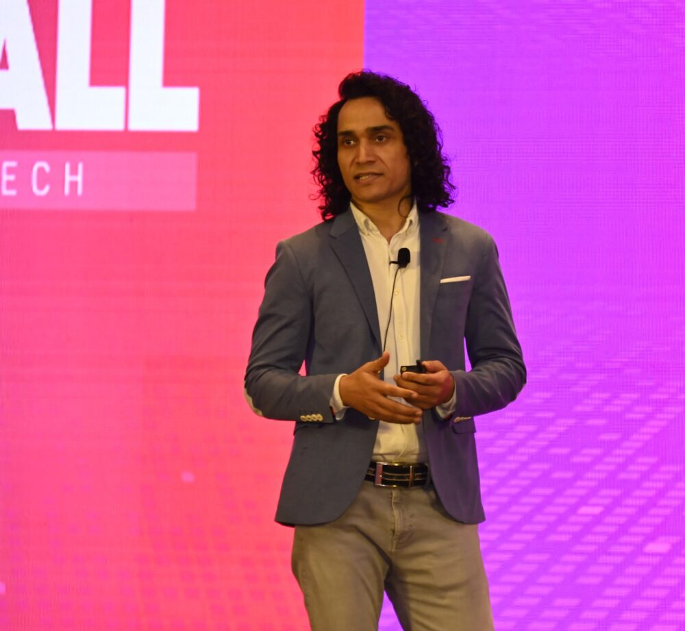

Even though you know you need to start studying, the sheer amount of material, domains, and resources leaves you wondering where to begin.
Stop Drowning in CISSP Study Material.
You Just Need the Right Structure.
2 days. 1 domain. Done.
An instructor-led bootcamp designed to help you understand CISSP Domain 1 through a clear, structured approach, without getting lost in the noise.
If you don’t get this part right, everything else becomes harder. This bootcamp helps you build the right mindset, understand key principles, and avoid the burnout that comes from trying to do it all on your own.
Get this right, and you’ll move through the rest of your CISSP prep with confidence.
CISSP isn’t necessarily difficult because the concepts are impossible to understand.
For many people, the real problem is knowing where to start.
You decide you’re finally going to prepare for CISSP.
Then you start looking for resources.
Before long, you have more study material than you know what to do with.
And instead of making progress, you start wondering:
So you make a plan.
Then you change it.
You save another resource.
Then you postpone starting until you have everything figured out.
And days or weeks can pass without making meaningful progress.
The problem isn’t that you can’t learn CISSP.
The problem is trying to navigate CISSP without a clear structure.
You don’t need more study material.
You need to know what to focus on, how the concepts connect, and what to do next.
That’s exactly what this 2-day Domain 1 Bootcamp is designed to help you with.
You don’t need to master all 8 CISSP domains before you can feel like you’re making progress.
You don’t need to read every book, watch every video, or collect every resource available.
You need a clear starting point.
A structured approach that helps you:
That’s the approach behind the 2-Day CISSP Accelerator: Domain 1 Bootcamp.
In just two focused sessions, we’ll take you through CISSP Domain 1 with a clear, structured approach designed to help you finally get started instead of endlessly preparing to start.
A focused, live, instructor-led bootcamp designed to help you understand CISSP Domain 1 and build a strong foundation for your CISSP journey.
Instead of trying to tackle all 8 domains at once, we’ll take one domain and break it down into concepts you can actually understand and remember.
Over 2 focused sessions, you’ll:
Build your foundation and work through the key concepts of CISSP Domain 1 with clear explanations and practical examples.
Continue with the remaining concepts, connect the dots, and reinforce your understanding through discussion and practice.
Throughout the bootcamp, you won’t just be told what something means.
You’ll understand why it matters, how it works, and how to think about it from a CISSP perspective.
The format is simple:
Just 2 focused sessions to help you get started with the right structure.
We’ll focus on understanding the concepts behind the terminology, connecting related ideas, and learning how to approach them from a CISSP perspective.
So when you encounter a question you’ve never seen before, you’re not simply trying to remember an answer.
You understand the concept well enough to reason through it.

CISSP preparation isn’t just about finding someone who knows the material.
It’s about finding someone who can make complex concepts easier to understand and help you see how everything fits together.
I’ve spent 21+ years in information security, working across security leadership, architecture, operations, and training.
Over the years, I’ve also had the opportunity to train and work with IT professionals across organizations including Cisco, HCL, Cognizant, Wipro, and others.
But my approach to teaching CISSP comes from something much simpler.
I don’t believe you should have to memorize everything to understand CISSP.
My focus is on breaking complex concepts down into simple explanations, practical examples, and the “why” behind the concept.
Because when you understand why something works, you don’t have to depend entirely on your memory.
You can reason through it.
And that’s particularly important for CISSP, where questions often test your understanding and judgment, rather than simply asking you to recall a definition.
My goal is simple:
Help you stop feeling overwhelmed, understand what you’re studying, and build a structured path toward CISSP.
That’s why I created the CISSP Accelerator.
![Feedback form: The bootcamp provided clear, structured guidance and real exam-style thinking that I couldn't get from books or videos. The instructor's breakdown of ISC2 logic and scenario-based questions made the biggest difference. The governance-first decision model, the risk-impact evaluation steps, and the structured elimination of distractors were the most impactful frameworks for me. After the bootcamp, I feel much more confident with Domain 1 and my overall CISSP preparation. The ISC2 mindset is finally clear, and I now have a structured, exam-focused approach that makes the exam feel far more manageable.](../images/testimonials/21.webp)
When you register for the bootcamp, you won’t just get two live sessions.
You’ll get a structured starting point for your CISSP preparation.
2 days. 2 hours each day.
Learn directly with me in a focused, interactive environment where you can ask questions, clarify concepts, and learn how to approach CISSP from the right perspective.
A visual representation of Domain 1 designed to help you see how the concepts connect, rather than treating them as isolated topics.
Reinforce what you’ve learned with CISSP-style practice questions and learn how to think through the concepts rather than simply memorize answers.
Have questions while learning? Bring them to the session and get them clarified along the way.
If you can’t attend a session live, you’ll have access to the recording so you can catch up.
Perhaps the most important thing you’ll take away:
You’ll know what you’ve started, what you’ve covered, and what to focus on next.
Instead of staring at eight domains and wondering where to begin, you’ll have one domain under your belt and a clearer path forward.
No. The bootcamp is designed to help you build your understanding of Domain 1 from the ground up. You don’t need to have completed other CISSP domains before attending.
Absolutely.
In fact, that’s exactly who this bootcamp is designed for. If you’ve been feeling overwhelmed and haven’t been able to figure out where to start, this gives you a structured way to begin.
Each session is 2 hours long.
You’ll attend two sessions, so the total learning time is just 4 hours.
The bootcamp focuses entirely on CISSP Domain 1: Security and Risk Management.
We’ll break down the key concepts, explain how they connect, and discuss them from a CISSP perspective.
You get a 100% Money-Back Guarantee – no questions asked.
Drop an email to support@hemantsajwan.com
No. This is a focused Domain 1 bootcamp, not the complete 8-domain CISSP program.
The purpose is to help you understand Domain 1 properly and give you a structured starting point for your CISSP preparation.
Yes. If you can’t attend a session, you’ll be able to access the recording and catch up.
Yes. You’ll receive the CISSP Domain 1 mind map and practice questions.
Once you complete your registration, you’ll receive the information you need to join the live sessions, along with the relevant bootcamp details.
That’s completely up to you. The bootcamp is designed to stand on its own. If, after attending, you feel that you’d benefit from structured guidance across all 8 domains, you can explore the CISSP Accelerator program with me, the details of which will be shared on Day 2 of the bootcamp. There is no obligation to continue.